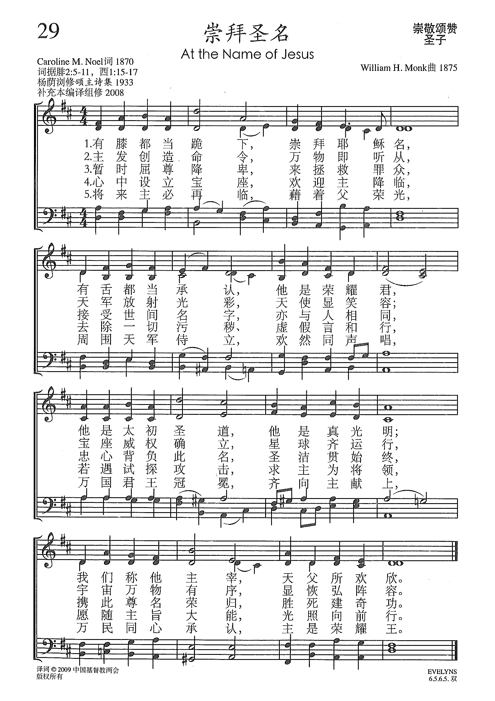

0220 At the Name of Jesus (Philippians 25-11) _Caroline M. Noel 崇拜聖名歌 KING'S WESTON
▲
| 簡介
At the Name of Jesus |
| This may well be a hymn based on a
hymn, for scholars say that the passage behind it (Philippians 2:5–11),
though not in the style of Greek poetry, shows traits of a communal
creedal statement capable of being sung. It is set here to one of the
composer’s most sonorous tunes. |
|
|
1 At the name of Jesus ev'ry knee shall bow,
ev'ry tongue confess him King of glory now.
'Tis the Father's pleasure we should call him Lord,
who from the beginning was the mighty Word.
2 At his voice creation sprang at once to sight,
all the angel faces, all the hosts of light,
thrones and dominations, stars upon their way,
all the heav'nly orders in their great array.
3 Humbled for a season to receive a name
from the lips of sinners unto whom he came,
faithfully he bore it spotless to the last,
brought it back victorious, when from death he passed.
4 In your hearts enthrone him; there let him subdue
all that is not holy, all that is not true;
crown him as your Captain in temptation's hour:
let his will enfold you in its light and pow'r.
5 Brothers, this Lord Jesus shall return again,
with his Father's glory, with his angel train;
for all wreaths of empire meet upon his brow,
and our hearts confess him King of glory now.
Source: Trinity Psalter Hymnal #270
At the Name of Jesus Every knee shall bow (Noel)
Author: Caroline M. Noel (1870)
|
有膝都當跪下，崇拜耶穌名，
有舌都當承認，祂是榮耀君;
祂是太初真道，祂是真光明，
我們稱祂主宰，乃父所歡欣。
奉了祂的命令，萬物始造成，
天使始現容顏，天軍始發聲，
寶座始皆建立，羣星始流行，
天空始成統系，萬緒始有倫。
暫時自己卑微，誕降罪人中，
接受世間名字，亦如眾孩童，
忠心守此名字，聖潔貫始終，
最後戴此名字，勝死建奇功。
心中設起寶座，歡迎主降臨，
為我洗清污點，驅假留真誠；
若遇試探攻擊，求主為將領，
願依主的旨意，跟主向前行。 |
|
http://www.sooopu.com/html/301/301346.html

 |
| |
|
| 051 |
崇拜聖名 |
At the name of Jesus every knee shall bow |
聖子 |
051 |
耶穌美名歌[編輯]
維基百科，自由的百科全書
跳至導覽跳至搜尋
《耶穌美名歌》是美國傳教士富善根據中國民歌《茉莉花》的曲調而寫的一首基督教聖詩，第二至四節是唐守臨所寫。本詩在1911年就已選入《頌主聖名》。
第一段歌詞：
美哉！聖哉！耶穌名，鮮於奇花最香馨，早也暮也我常念，欣然傳出使人聽。奇哉！奇哉！耶穌恩，救主愛罪人，臨於凡間舍已身。
https://zh.wikipedia.org/wiki/%E8%80%B6%E7%A8%A3%E7%BE%8E%E5%90%8D%E6%AD%8C
維基百科，自由的百科全書
跳至導覽跳至搜尋
富善（Chauncey
Goodrich，1836年6月4日－1925年9月29日）美國公理會傳教士，中文聖經官話和合本譯者之一。
1836年6月4日，富善出生於美國麻薩諸塞州Hinsdale農莊的虔誠的基督徒家庭，父親是Elijah
Hubbard Goodrich，母親是Mary Northrop Washburn[1]。他就讀於Hinsdale中學，1861年畢業於威廉斯學院。此後在紐約協和神學院攻讀神學課程2年時間，1864年畢業於麻薩諸塞州Andover，同年9月21日被按立為牧師，隨後受美國公理會差遣，與新婚妻子前往中國北京傳教，6年後調往Yucho。1872年回國，1873年再前往通州。1885年第二次回國，1887年春回到通州。他在通州負責公理會設立的神學院。
富善花費大量時間用於翻譯聖經
(和合本)。1890年參與七人委員會，負責翻譯聖經；1908年狄考文去世，富善便接替了委員會主席一職[2][3]。1917年全書定稿，他與鮑康寧、鹿依士等人終於看到了聖經
(和合本)的誕生。他也翻譯或編寫了數量可觀的中文聖詩，為各個差會所使用。此外，他也用了29年時間將聖經翻譯成蒙古文，於1919年出版。[4]
富善的中文非常好。他是北京匯文書院的文學博士，早在1891年就已經出版《富善字典》(A Pocket Dictionary
[Chinese-English] and Pekingese Syllabary)，當中包括10400個漢字，再版多次，直到1964年仍再版。他也編寫了《官話萃珍》(A
Character Study of the Mandarin Colloquial)。他的兒子富路德(Luther
Goodrich)也是著名漢學家。[5]
富善有過三次婚姻。第一位妻子Abbie
Ambler，1864年9月10日結婚；第二位妻子是Justina Emily
Wheeler，1878年5月31日結婚；第三位妻子是Sarah Clapp，1880年5月13日結婚[6]。他和第三任妻子生有一子，John
Ellsworth Goodrich，出生於1886年12月27日。富善於1925年9月29日去世，終年89歲。
參考資料[編輯]
-
^ 富善家谱. [2012-04-26].
（原始內容存檔於2020-01-25）.
-
^ 《富善》，林振時著，福音文宣社1987年初版
-
^ 《譯經溯源—現代五大中文聖經翻譯史》，趙維本著，中國神學研究院1993年初版。
-
^ 丹尼爾·費舍：《狄考文傳》，廣西師範大學出版社，2009年12月
-
^ 丹尼爾·費舍：《狄考文傳》，廣西師範大學出版社，2009年12月
-
^ 美國Goodrich家族，314頁
https://zh.wikipedia.org/wiki/%E5%AF%8C%E5%96%84
http://www.congsing.org/at_the_name.html
Caroline M. Noel, 1870
Addressed to one another
|
At the name of Jesus |
Phil. 2:10 |
|
ev’ry knee shall bow, |
Is. 45:23 |
|
ev’ry tongue confess him |
Phil. 2:11a |
|
King of glory now. |
Ps. 24 |
|
’Tis the Father’s pleasure |
|
|
we should call him Lord, |
Phil. 2:11b |
|
who from the beginning |
|
|
was the mighty Word. |
John 1:1 |
|
|
|
|
At his voice creation |
John 1:3 |
|
sprang at once to sight, |
|
|
all the angel faces, |
|
|
all the hosts of light, |
Ps. 33:6 |
|
thrones and dominations, |
Col. 1:16 |
|
stars upon their way, |
Job 38:31-33 |
|
all the heav’nly orders |
Jer. 33:25 |
|
in their great array. |
|
|
|
|
|
Humbled for a season |
2 Cor. 8:9; Phil. 2:7-9 |
|
to receive a name |
|
|
from the lips of sinners |
|
|
unto whom he came, |
|
|
faithfully he bore it |
Heb. 2:17; 3:2 |
|
spotless to the last, |
|
|
brought it back victorious, |
Rom. 14:9 |
|
when from death he passed. |
|
|
|
|
|
In your hearts enthrone him; |
Eph. 3:17; Col. 3:15 |
|
there let him subdue |
Col 1:13 |
|
all that is not holy, |
|
|
all that is not true: |
|
|
crown him as your Captain |
Heb. 2:10 (KJV) |
|
in temptation’s hour: |
|
|
let his will enfold you |
Phil. 2:5 |
|
in its light and pow’r. |
Eph. 1:18 |
|
|
|
|
Brothers, this Lord Jesus |
|
|
shall return again, |
Acts 1:11 |
|
with his Father’s glory, |
Matt. 16:27 |
|
with his angel train; |
Matt. 25:31; Rev. 19:14 |
|
for all wreaths of empire |
Matt. 28:18; Eph. 1:21; Rev. 1:5; 19:16 |
|
meet upon his brow, |
|
|
and our hearts confess him |
|
|
King of glory now. |
|
It is neither by chance nor an indication of theological imbalance that the
richest section of many hymnbooks is that devoted to Christ’s estate of
exaltation. The confluence of divine majesty and gracious salvation to be seen
in his resurrection, his ascension, his sitting at the right hand of the
Father, and his second coming stirs even the most prosaic of saints to make
melody.
Rejoice greatly, O daughter of Zion!
Shout aloud, O daughter of Jerusalem!
behold, your king is coming to you;
righteous and having salvation is he. (Zech. 9:9)
In John’s account of heavenly worship, the Lamb’s taking of the scroll prompts
a great outburst of song—indeed, the “new song”—and acclamation from “every
creature in heaven and on earth and under the earth and in the sea, and all
that is in them” (Rev. 5). We need not wait till heaven to set forth this
theme that we are destined to sing.
Among hymns on the topic, Caroline Noel’s “At the Name of Jesus” is useful for
its assertion of the great and ironic truth, implicit in both the Zechariah
passage and the Revelation passage just quoted, that Christ’s exaltation is
grounded in his humiliation. The king is mounted on a donkey; the Lion of the
tribe of Judah is the Lamb who was slain. The hymn, following its model in
Philippians 2:6-11, takes as its fulcrum (stanza 3) the doctrine that
Jesus was humbled for a season to receive the covenant name of God. He came as
a suffering servant and underwent the cursed death of the cross so that
creation itself might be restored and that sinners especially might be
ransomed to, in turn, serve him as “Lord.” He is the “King of glory,” who
alone is qualified to ascend to heaven and to bring us with him.
The preceding lines (stanza 2) prepare us for the full force of this
irony by noting his exalted role in creation, particularly in the creation of
things bigger than we. “By the word of the Lord the heavens were made, and by
the breath of his mouth all their host” (Ps. 33:6). We have here a list of
angelic and celestial wonders beyond our perception, to say nothing of our
understanding, and all of which were made through the Word. (Note how the
grammar of the list breaks down the two-lines-per-clause pattern of stanza
1 into awestruck phrases of one line each.) Thus the second and third
stanzas together present a trenchant contrast between Christ’s pre-incarnation
glory and the humility with which he took the form of a servant and obeyed the
Father to the point of death. Christ’s subsequent victory made his latter
exaltation even more glorious than his former exaltation.
The last two stanzas follow seamlessly from the third, with stanza 4
making application for our walk in sanctification, and stanza 5 noting
the exaltation that will be Christ’s when he returns in judgment.
The poetry is full of successful details. At the beginning, for example,
alliteration coordinates with rhyme to support the impressive allusion to
Psalm 24 in line 4. The sound of the word “name” in line 1 constricts
to the more closed vowel in “knee” in line 2. These words fall on the same
syllable of their respective lines, and Vaughan Williams’s tune plays up the
relationship between “name” and “knee” by initiating both lines with the same
three-note gesture. Then we seem to move on to different sounding words in
line 3, only to return to the alliterated sound at the arrival of the rhyme in
line 4 (“now”) with its very open vowel.
The tune KING’S
WESTON is a masterpiece. It is easier to sing than the composer’s
earlier SINE
NOMINE (“For All the Saints”) because its rhythm is more repetitive,
there are fewer melodic leaps, and the placement of syllables remains
the same from stanza to stanza. Yet the tune is catchy and distinctive. For
all its repetitiveness, the rhythm comes alive because of an ongoing
equivocation in meter. Should we feel it in three, as published?

Or in two?

The basic rhythm (short-short-long-long-LONG) repeats six times as the
pitch climbs from G at “name” to A at “shall,” to B at “tongue,” to a
climactic D when the name
is uttered: “call him Lord.” (It’s interesting how some congregants
instinctively know to crescendo on “Lord.”)
Then, having built up considerable energy, the melody releases and reverses
direction in an extravagant descent from high E to low E, marked by a
corresponding reversal of the basic rhythm:

Throughout, Vaughan Williams’s handling of the minor
mode reinforces the gravity of the text.
Nobody singing this tune could “confess him King of glory now” with glibness.
https://hymnary.org/text/at_the_name_of_jesus_every_knee_noel
Notes
Scripture References:
st. 1 = Phil. 2:6-11
John 1:1
st. 2 = Ps. 33:6-9
st. 3 = Col. 2:15
st. 6 = Acts 1:11
Caroline Marie Noel (b.
Teston, Kent, England, 1817; d. St. Marylebone, London, England, 1877) wrote
this spiritually powerful text. The daughter of an Anglican clergyman and
hymn writer, she began to write poetry in her late teens but then abandoned
it until she was in her forties. During those years she suffered frequent
bouts of illness and eventually became an invalid. To encourage both herself
and others who were ill or incapacitated, Noel began to write devotional
verse again. Her poems were collected in The Name of Jesus and Other
Verses for the Sick and Lonely (1861, enlarged in 1870).
One of the hymns in the
1870 collection was this text (originally beginning "In the Name of Jesus"),
designed for use as a processional hymn on Ascension Day. The Psalter
Hymnal includes stanzas 1, 3-5, and 7-8 of Noel's original eight
stanzas.
The text is based on the
confession of faith that Paul quotes in Philippians 2:6-11, which may well
have been an early Christian hymn. Stanza 1 announces the triumph of the
ascended Christ to whom "every knee should bow" (Phil. 2: 10). In stanza 2
Christ is the "mighty Word" (see John 1:1-4) through whom "creation sprang
at once to sight." Stanzas 3 and 4 look back to Christ's humiliation, death,
resurrection, and ascension (Phil. 2:6-9). Stanza 5 is an encouragement for
submission to Christ, for us to have the "mind of Christ," and stanza 6
looks forward to Christ's return as "King of glory." The text is not only
concerned with the name 'Jesus," whose saving work it confesses, but also
with the glory and majesty that attends "the name of Jesus."
Liturgical Use:
Advent; Easter; Ascension; Epiphany; as a sung confession of faith; many
other occasions of worship.
--Psalter Hymnal
Handbook, 1988
Notes
Ralph Vaughan Williams (PHH
316) composed KING'S WESTON for this text. It was published in Songs
of Praise (1925). The combination of text and tune in a festive
hymn¬-anthem by Vaughan Williams has become a favorite of many church
choirs. The tune's title refers to a manor house on the Avon River near
Bristol, England.
KING'S WESTON is a great
tune marked by distinctive rhythmic structures and a soaring climax in the
final two lines. Like many of Vaughan Williams's tunes, it is best sung in
unison with moderate accompaniment to support this vigorous melody. For
festive services use the descant in Vaughan Williams's anthem for stanza 4,
or combine select choral stanzas from this anthem with congregational
stanzas in the manner hymn concertato, using E minor throughout.

--Psalter Hymnal
Handbook, 1988
Full Text
1 At the name of Jesus
every knee shall bow,
every tongue confess him King of glory now;
'tis the Father's pleasure we should call him Lord,
who from the beginning was the mighty Word.
2 At his voice creation
sprang at once to sight:
all the angel faces, all the hosts of light,
thrones and dominations, stars upon their way,
all the heavenly orders in their great array.
3 Humbled for a season,
to receive a name
from the lips of sinners, unto whom he came;
faithfully he bore it spotless to the last,
brought it back victorious when from death he passed;
4 bore it up triumphant
with its human light,
through all ranks of creatures, to the central height,
to the throne of Godhead, to the Father's breast;
filled it with the glory of that perfect rest.
5 In your hearts
enthrone him; there let him subdue
all that is not holy, all that is not true.
Look to him, your Savior, in temptation's hour;
let his will enfold you in its light and power.
6 Christians, this Lord
Jesus shall return again,
with his Father's glory, o'er the earth to reign;
for all wreaths of empire meet upon his brow,
and our hearts confess him King of glory now.
Scripture References
Thematically related:
-
st. 1 =
-
st. 2 =
-
st. 3 =
-
st. 6 =
Further Reflections on Scripture References
The text is based on the
confession of faith that Paul quotes in Philippians 2:6-11, which may well
have been an early Christian hymn. Stanza 1 announces the triumph of the
ascended Christ to whom "every knee should bow" (Phil. 2: 10). In stanza 2
Christ is the "mighty Word" (see John 1:1-4) through whom "creation sprang at
once to sight." Stanzas 3 and 4 look back to Christ's humiliation, death,
resurrection, and ascension (Phil. 2:6-9). Stanza 5 is an encouragement for
submission to Christ, for us to have the "mind of Christ," and stanza 6 looks
forward to Christ's return as "King of glory." The text is not only concerned
with the name 'Jesus," whose saving work it confesses, but also with the glory
and majesty that attends "the name of Jesus."
https://www.umcdiscipleship.org/resources/history-of-hymns-at-the-name-of-jesus
“At the Name of Jesus”
Caroline Noel
UM Hmnal, No. 168
At the name of Jesus
every knee should bow,
every tongue confess him
King of glory now;
’tis the Father’s pleasure
we should call him Lord,
who from the beginning
was the mighty Word.
Hymns often magnify Scripture. Caroline Noel’s “At the Name of Jesus” does this
for the great kenosis hymn found in Philippians 2:5-11. Kenosis, or the
self-emptying of Christ, is the theme of this New Testament hymn.
This hymn conveys the essence of the entire earthly journey of Christ from his
incarnation as an infant in Bethlehem, through his ministry and crucifixion, and
concludes with his resurrection and ascension.
The Bible contains many canticles and hymns beyond the psalms. For example,
Exodus, Deuteronomy and Luke include great canticles that contain a sense of the
faith heritage to be remembered in coming generations. New Testament hymns are
usually creedal in content—sung versions from the emerging Christian church
about what it believes based on the witness of Christ’s life. Perhaps the most
important of these is the hymn found in Philippians 2.
The confessional quality of this hymn is very apparent. Noel’s paraphrase draws
its opening line from verse 10 of the text in the King James Version. The entire
passage follows:
“Let this mind be in you, which was also in Christ Jesus: Who, being in the form
of God, thought it not robbery to be equal with God: But made himself of no
reputation, and took upon him the form of a servant, and was made in the
likeness of men: And being found in fashion as a man, he humbled himself, and
became obedient unto death, even the death of the cross.
“Wherefore God also hath highly exalted him, and given him a name which is above
every name: That at the name of Jesus every knee should bow, of things in
heaven, and things in earth, and things under the earth; And that every tongue
should confess that Jesus Christ is Lord, to the glory of God the Father.”
Born in London in 1817, Noel was the daughter of a vicar in the Church of
England. She died in London in 1877. Though she began writing hymns at an early
age, she stopped when she was 20 years old and didn’t resume hymn writing until
20 years later in 1857. The last 25 years of her life were spent as an invalid.
The Name of Jesus and Other Verses for the Sick and Lonely was published in
1861. Later editions were titled The Name of Jesus and Other Poems.
The original hymn contained eight stanzas. While no hymnal includes all
eight stanzas, it is difficult to delete any without damaging the continuity of
the narrative. The original stanza two (not included in the UM Hymnal), for
example, establishes Jesus as a part of the Godhead with echoes of the Nicene
Creed:
Mighty and mysterious
in the highest height,
God from everlasting,
very Light of Light;
In the Father’s bosom,
with the Spirit blest,
Love, in love eternal,
rest, in perfect rest.
The New Testament kenosis hymn is the genesis of many hymns throughout the
centuries that focus on the name of Jesus and the comfort and power of that
name.
Charles Wesley suggests the comfort of Jesus’ name in the third stanza of
“O for a Thousand Tongues to Sing”: “Jesus, the name that charms our fears. . .
.”
Later in the 18th century, the famous Anglican hymn writer John Newton began a
well-known hymn, “How sweet the name of Jesus sounds in a believer’s ear.”
Eighteenth-century American hymn writer Edward Perronet begins his hymn in this
vein: “All Hail the Power of Jesus’ Name” (UM Hymnal, No. 154).
Many references to Jesus’ name are found in the gospel song genre, for example,
Gloria and Bill Gaither’s “There’s Something About That Name” (UM Hymnal, No.
171).
While many hymns allude to one aspect of the Philippians passage, none of these
hymns matches Noel’s poem for its thorough paraphrase of the entire biblical
creed.
Ralph Vaughan Williams
Eminent English composer Ralph Vaughan Williams (1872-1958) wrote his venerable
tune, KING’S WESTON, for this text in 1931 for Songs of Praise Enlarged. The
dignity of Vaughan Williams’ musical setting fits perfectly with the majesty of
the scriptural paraphrase. Almost all hymnals now maintain this text/tune
pairing.
Dr. Hawn is professor of sacred music at Perkins School of Theology.
https://hymnstudiesblog.wordpress.com/2009/06/23/quotthe-name-of-jesusquot/
"THE NAME OF JESUS"
"Far above…every name that is named…" (Eph. 1.21)
INTRO.:
A hymn which praises the name of Jesus Christ as the one which is far above
every name that is named is "The Name of Jesus" (#137 in Sacred
Selections for the Church). The text was written by William Clark Martin
who was born on Dec. 25, 1864, at Hightstown, NJ, and became a Baptist
minister. After working with the Noank Baptist Church in Noank, CN, from 1894
to 1900, he served with the East Albany First Baptist Church in Albany, NY,
and later in Boston, MA.
The tune was composed by Edmund Simon Lorenz (1854-1942). The song was
apparently produced in 1901 and was first published in the 1902 Joyful
Praise edited by Charles H. Gabriel for the Lorenz Music Co. Other
relatively well-known songs (though not among us) by Martin include "I
Remember Calvary" with music by James M. Black; "My Anchor Holds" with music
by Daniel B. Towner; "Still Sweeter Every Day" with music by C. Austin Miles;
and "Land of the Unsetting Sun" with music by Gabriel. Cyberhymnal credits
Martin with some 32 different songs. In 1912 he moved to labor at the First
Baptist Church in Ft. Myers, FL, and remained there until his death on Aug.
30, 1914, at Rialto, FL. Among hymnbooks published by members of the Lord’s
church during the twentieth century for use in churches of Christ, "The Name
of Jesus" appeared in the 1921 Great
Songs of the Church (No. 1) and the 1937 Great
Songs of the Church No. 2 both edited by E. L. Jorgenson; the 1935 Christian
Hymns (No. 1) and the 1966 Christian
Hymns No. 3 both edited by L. O. Sanderson; the 1963 Christian
Hymnal edited by J. Nelson Slater; and the 1963 Abiding
Hymns edited by Robert C. Welch. Today it may be found to my knowledge
only in Sacred
Selections.
The song identifies several blessings which come to us in the name of
Jesus Christ.
I. Stanza 1 says that His name brings joy
"The name of Jesus is so sweet, I love its music to repeat;
It makes my joys full and complete, The precious name of Jesus!"
A. The name of Jesus is important because salvation is found in no other:
Acts 4.12
B. We should love its music to repeat as we sing with grace in our hearts to
the Lord: Col. 3.16
C. The reason that we can rejoice always in the Lord: Phil. 4.4
II. Stanza 2 says that His name brings comfort
"I love the name of Him whose heart Knows all my griefs and bears a part,
Who bids all anxious fears depart–I love the name of Jesus!"
A. Jesus knows our griefs because He share in flesh and blood and was made in
all things like us, so having suffered, he is able to aid those who suffer:
Heb. 2.14-18
B. Thus, He bears a part because we can cast all our cares on Him: 1 Pet. 5.7
C. As a result, He comforts us by bidding all anxious fears depart: 2 Tim.
1.7, 1 Jn. 4.118
III. Stanza 3 says that His name brings cheer
"That name I fondly love to hear, It never fails my heart to cheer;
Its music dries the falling tear: Exalt the name of Jesus!"
A. Christians should love to hear the name of Jesus because at the name of
Jesus every knee should bow and every tongue should confess: Phil. 2.9-10
B. Because of what He has done for us, He brings us good cheer: Jn. 16.33
C. This cheer will dry the falling tears: Ps. 116.8
IV. Stanza 4 says that His name brings sweetness
"No word of man can ever tell How sweet the name I love so well;
Oh, let its praises ever swell, O praise the name of Jesus!"
A. No word of man can ever tell the fulness of the blessings that we have in
Christ because God’s gift is unspeakable: 2 Cor. 9.15, 1 Pet. 1.8
B. The name of Jesus is like the word of God, sweeter than honey and the
honeycomb: Ps. 19.10
C. Therefore, we should always offer up the sacrifice of praise to Him: Heb.
13.15
CONCL.:
The chorus reminds us how worthy of praise the name of Jesus really is.
"’Jesus,’ Oh, how sweet the name! ‘Jesus,’ every day the same;
‘Jesus,’ let all saints proclaim Its worthy praise forever."
In the Bible names are important because the name of someone or something
usually represented what that person or thing actually stands for. We should
always be praising the name of our Savior because we can have salvation and
all other spiritual blessings only in "The Name of Jesus."
https://www.hymnologyarchive.com/at-the-name-of-jesus
altered as
In the name of Jesus
with
EVELYNS
PRINCETHORPE
CAMBERWELL
CUDDESDON
KINGS WESTON
I. Textual History
The passage in Philippians 2:5–11 known as the kenosis hymn or sometimes called
the Great Reversal is regarded as an early Christian hymn in its own right,
possibly predating Paul’s letter to the Philippians, possibly not written by him
but something already in circulation he chose to record.
This early hymn became the seed of another magnificent hymn in praise of Christ
written by Caroline Noel (1817–1877), daughter of Gerard T. Noel (1872–1851) and
niece of Baptist W. Noel (1799–1873), both ministers in the Church of England,
hymn writers, and hymnal compilers. A few of Caroline’s hymns were written as a
teen, but most were written during the last 20 years of her life as her health
wavered. John Julian wrote, “Miss Noel, in common with Miss Charlotte Elliott,
was a great sufferer, and many of these verses were the outcome of her days of
pain.”[1]
Noel, given her physical struggles, might have been drawn to the kenosis because
of the way the Bible offers to uplift the humble. Her hymn “At the name of
Jesus” was first published in the enlarged edition of The Name of Jesus and
Other Verses (1870 | Fig. 1). The title of her book is based on the first hymn
in the volume, “The Name of Jesus,” beginning “One Name alone in all this
death-struck earth,” which is a compelling multi-stanza meditation on the name(s)
of Jesus. Her most popular hymn, “At the Name of Jesus,” in contrast, is more
about the redemptive work of Christ and the glory due to him in his position of
heavenly kingship. In its original context, given in eight stanzas of eight
lines, without music, it was labeled “Ascension Day,” an appropriate designation
for Christ’s return to and eternal reign on the throne.
View fullsize
512_o-1_Noel1870-4.jpg
View fullsize
512_o-1_Noel1870-5a.jpg
View fullsize
512_o-1_Noel1870-5b.jpg
Fig. 1. The Name of Jesus and Other Verses for the Sick and Lonely, Enlarged Ed.
(London: William Macintosh, 1870).
In the supplement to Julian’s Dictionary of Hymnology (1907), he reported, “In
the 1903 ed. of Church Hys. this hymn by Miss Noel has been restored to its
original reading, “In the name of Jesus,” at the request of her family.”[2] This
is quite likely in reference to the emergence of the Revised Version of the
Bible, where Philippians 2:10 reads “in the name of Jesus,” versus the King
James’ “at the name of Jesus.” Since the Revised Version was released in 1881,
four years after Noel’s death, the change would have been motivated by her
surviving family, not because this was Noel’s original wording, but because they
felt it was more faithful to the original wording of the Greek, a slight
misconception on Julian’s part. In spite of the family’s wishes, this version
has not taken hold in the broader hymnal corpus.
View fullsize
churchhht00soci_orig_0726a.jpg
View fullsize
Fig. 2. Church Hymns with Tunes (London: SPCK, 1903).
Fig. 2. Church Hymns with Tunes (London: SPCK, 1903).
This printing illustrates the inconsistency of meter in Noel’s stanza beginning
“Name Him, brothers, Name Him,” with iambic second and third lines. Here the
editors made a musical accommodation; other hymnals make textual adjustments.
For more on PRINCETHORPE, see below.
The editors of the enlarged edition of Songs of Praise (1931) added a doxology,
“Glory then to Jesus,” which has been repeated in some other collections.
II. Textual Analysis
Regarding the kenosis hymn, Bert Polman noted an important function of the
passage as an early creed, saying, “That early Christian credo quoted by Paul
summarizes the essence of Christian beliefs about the incarnation, atoning
death, exaltation, and return of Christ.”[3] Noel’s overarching structure
somewhat reflects this general outline, adding Christ’s role in creation in her
stanza 3, then briefly covering incarnation, death, and resurrection in stanza
4, the ascension in stanza 5, and the ultimate return in stanza 8.
The first six lines of the hymn are a clear appeal to the last part of the
kenosis hymn, Philippians 2:9-11, with the last two lines picking up language
from John 1:1. The text also harkens to Psalm 24:10 (“Who is the King of glory?
The Lord of hosts, he is the King of glory!”). Literary scholar Anthony Esolen
brought attention to Noel’s technique:
Notice that the name Jesus and the title mighty Word bracket the stanza: The two
are one. That means that the adverb now, which ends the first half of the
stanza, isn’t just tossed in to provide a rhyme with bow. Good poets don’t
search for rhymes; they have them already, and use them for many purposes. Here
the now of our time is placed in the context of the existence of the Word from
the beginning.”[4]
Stanza 2 delves more into the nature of who Christ is and what he represents.
The first four lines pull from the language of John 1:1–5, especially the ideas
of Christ co-existing with God the Father, and Christ as light. The next two
lines put Christ in the context of the Godhead with the Father and the Spirit.
The last two point to Christ as a source of love (John 5:12–13, Eph. 5:2, etc.)
and of rest (Matt. 11:28).
Stanza 3 begins resumes the narrative part of the hymn, carrying forward the
presence of Christ “from the beginning,” looking to his role as creator. For
this, Noel has again appealed to John 1, especially verses 3 and 10, but here
she especially looks also to Colossians 1:16, “For by him all things were
created, in heaven and on earth, visible and invisible, whether thrones or
dominions or rulers or authorities—all things were created through him and for
him” (ESV). Noel’s unique phrasing “thrones and dominations” comes from a
literary tradition often credited to John Milton’s Paradise Lost (1667), lines
600–602, and repeated by others:
Hear all ye angels, progeny of light,
Thrones, dominations, princedoms, virtues, powers,
Hear my decree, which unrevok’d shall stand.
Nonetheless, some hymnal editors change “dominations” to something else, such as
“bright dominions” to better reflect the more common biblical language.
Stanza 4 returns to the roots of the hymn in Philippians 2. Whereas the first
stanza concentrates on the last part, his glorious kingship, this stanza deals
with the humbling of Christ, his assumption of a human body, his bearing of our
penalty, but also his victory over death. Some scholars have noted how the
Scripture text says it was the Father who “bestowed on him the name that is
above every name,” whereas Noel’s hymn says a name was received “from the lips
of sinners.” Philippians 2 in particular assigns the name “Lord,” whereas Noel
did not specify the name she had in mind. One name he received from sinners was
“Christ” (or “Messiah”). Consider, for example, Mark 8:29 (“And he asked them,
‘But who do you say that I am?’ Peter answered him, ‘You are the Christ.’”) or
Luke 23:39 (“One of the criminals who were hanged railed at him, saying, ‘Are
you not the Christ? Save yourself and us!’”; see also John 1:41, 4:25).
The narrative continues in stanza 5, with his glorious ascension and seating on
the throne (Mark 6:19, Luke 24:5-53, Acts 1:9–11). Here the “perfect rest”
mentioned in stanza 2 is seen in its heavenly completion.
Much like her other poem, the namesake of her book, Noel used stanzas 4 through
6 to contextualize the spiritual narrative in terms of a name. Stanza 6 also
marks a shift from narrative to application. Anthony Esolen described it this
way:
Then Noel turns toward us. It’s a turn we will see again and again in the old
hymns. Once the poet has meditated upon who God is, or upon what God has done,
the lesson will be applied to us, in our troubled lives now. The stanzas are
cast in the form of exhortation and command. … Consider the profound prayer it
enjoins on us—the urgency of the repeated command underscores it. We are to name
Him—with a catch in our breath, with wonder and reverential fear. The very name
of Jesus is a prayer. We are to dwell upon it because of what He has done for
us, but more because of who He is.[5]
In the sixth stanza, “love as strong as death” is a nod to Song of Solomon 8:6.
The first part of stanza 7 possibly relates to Hebrews 4:16 (“Let us then with
confidence draw near to the throne of grace, that we may receive mercy and find
grace to help in time of need,” ESV). It also, in a sense, conveys the notion of
Philippians 2:5, to put on the mind of Christ.
The final stanza pertains to the Second Coming (Matt. 24:30–31, Lk. 21:27, Acts
1:10–11, Rev. 19:11–16), coming in glory with a host of angels. The first line,
with its “brothers,” as with the first line of stanza 6, is typically altered to
“Christians,” especially since the 1980s. The fourth line, with the “With His
angel train” is often altered to read “O’er the earth to reign,” as in the
Episcopal Hymnal 1940, or something similar. Hymnologist Carl Daw felt the fifth
line was worth preserving, “because ‘all wreaths of empire’ is such a marvelous
phrase, capturing as it does a detail of the historical period in which Christ
was on earth yet also gaining a certain timelessness by its difference from the
present day.”[6] Noel bookends the hymn, returning from where it started, with
confessing the King of Glory.
III. Tunes
1. EVELYNS
Noel’s text has paired with a number of possible tunes. One of the earliest
pairings still in use is the tune EVELYNS, written for this text by William
Henry Monk (1823–1889) for the second edition of Hymns Ancient & Modern (1875 |
Fig. 3). Erik Routley called this “one of Monk’s most successful tunes,”[7] and
Kenneth Trickett said “It is a strong tune, capable of interpreting these words
with great effectiveness.”[8] Monk’s setting includes a musical accommodation
for the irregular iambic line, “With love as strong as death,” a curious
decision considering the editors changed the following line, “But with awe and
wonder” to conform to the meter. Nonetheless, Monk would not be the only
composer to take a similar approach.

View fullsize
AttheNameofJesus-HA&M1875_0001a.jpg
View fullsize
Fig. 3. Hymns Ancient & Modern , Rev. & Enl. (London: William Clowes
& Sons, 1875).
Fig. 3. Hymns Ancient & Modern, Rev. & Enl. (London: William Clowes & Sons,
1875).
2. PRINCETHORPE
In Church Hymns with Tunes (1903), as in Figure 2 above, the editors had used
PRINCETHORPE, a tune by William Pitts (1829–1903), written when he was organist
of the Brompton Oratory. This tune was first printed in Oratory Hymn Tunes (1871
| Fig. 4, pending), where it was called A DAILY HYMN TO MARY. Like Hymns Ancient
& Modern (Fig. 3), the editors of Church Hymns opted to keep Noel’s irregular
text and provide a musical accommodation.
3. CAMBERWELL
The tune CAMBERWELL was written for this text by John Michael Brierley (1932–)
and published in Thirty 20th Century Hymn Tunes (1960 | Fig. 5) in a unison
setting, the same year Brierley was ordained and became curate of Sourtport-on-Severn.
A harmonized version was printed later in leaflet form, then both versions were
included in the Methodist Hymns & Songs (1969 | Fig. 6) when Brierley was vicar
of Dines Green. Notice how the first printing of the hymn tune in 1960 used the
original first line, “At the name of Jesus,” but the Methodist printing used the
alternate first line, “In the name of Jesus.”

View fullsize
Fig. 5. Thirty 20th Century Hymn Tunes (London: Josef Weinberger Ltd., ©1960),
excerpt.
Fig. 5. Thirty 20th Century Hymn Tunes (London: Josef Weinberger Ltd., ©1960),
excerpt.

View fullsize
Fig. 6. Hymns & Songs (London: Methodist Publishing House, ©1969), excerpt.
Fig. 6. Hymns & Songs (London: Methodist Publishing House, ©1969), excerpt.
In an errata sheet distributed with A Short Companion to Hymns & Songs (1969),
editor John Wilson included this personal note from the composer:
I wrote the tune about 12 years ago [c. 1957]. I suppose it is really a
march-like tune, to be played not too fast. It isn’t really like a lot of the
other new tunes, as it has more of the traditional flavour, and can be played
perfectly straight-forwardly, or, if necessary, it can be played with more
freedom, as I often do. It is dedicated to Geoffrey Beaumont, and I called it
CAMBERWELL as he was vicar of St. George’s, Camberwell, when I first met him.
4. CUDDESDON
When William Harold Ferguson (1874–1950) was co-editor of the Public School Hymn
Book (1919), he included his composition CUDDESDON for Noel’s text (Fig. 7), and
it also appeared with J.M. Neale’s text “Those eternal bowers man hath never
trod.” Here the tune was marked “Anon” but it was credited to Ferguson in other
collections. At the time, Ferguson was Warden of St. Edward’s School, Oxford.
The tune is named for Cuddesdon Theological College, where the composer had
studied in preparation for being ordained into the Church of England. In this
case, the editors chose to revise Noel’s iambic lines, using “But with awe and
wonder” from Hymns Ancient & Modern, and making the simple and sensible change
at “With love strong as death.”

View fullsize
IntheName-PublicSchoolHymnBook-1919_0001a.jpg
View fullsize
Fig. 7. Public School Hymn Book with Tunes (London: Novello, 1919).
Fig. 7. Public School Hymn Book with Tunes (London: Novello, 1919).
5. KINGS WESTON
In 1906, when Ralph Vaughan Williams (1872–1958) was editor of The English
Hymnal (1906), he set Noel’s text to LAUS TIBI CHRISTE, a German processional
tune, dating as early as 1533 in a Schönenberg Nonnenkloster, possibly
originating as a trope for the Kyrie. Apparently unsatisfied with this setting
Vaughn Williams composed his own tune, KINGS WESTON, for Songs of Praise (1925 |
Fig. 8), a collection he co-edited. The tune is named after Kings Weston (no
apostrophe), a historic estate on the Avon river in Bristol, England, where the
composer had been a frequent guest.

View fullsize
Fig. 8. Songs of Praise (Oxford University Press, 1925), excerpt.
Fig. 8. Songs of Praise (Oxford University Press, 1925), excerpt.
One of the tune’s most distinctive features is the consistent rhythmic pattern
at the beginning of every phrase, which is inverted in the penultimate phrase.
The melodic direction of that phrase is also inverted, descending rather than
ascending like all the other phrases. This original printing included two
musical accommodations, one in imitation of HA&M (Fig. 3), keeping “With love as
strong as death” while incorporating “But with awe and wonder.” The other is a
rhythmic adjustment to the end of the same stanza to avoid a having a long note
on the word “and.” In the enlarged edition (1931), the editors instead avoided
the musical changes by altering the text. That same edition introduced an
apostrophe to the name (KING’S WESTON) and added the doxology “Glory then to
Jesus.” Many other hymnals have repeated the faulty apostrophe.
In 1927, Vaughan Williams issued an anthem arrangement via Oxford University
Press with choral harmonizations and a descant.
Vaughan Williams’ tune has become the most common tune setting for Noel’s text
and has been widely praised. His colleague Archibald Jacob wrote:
It is a solid tune, in triple time, with a strongly stressed rhythm, and a
characteristic exchange of accent in the last two lines; it is a dignified, but
not a solemn tune, and must not be sung too slowly.[9]
Alan Luff added, “It is also unusual in being mainly harmonized in a sparse
three-part texture.”[10] Reformed scholar Bert Polman said “KING’S WESTON is a
great tune marked by distinctive rhythmic structures and a soaring climax in the
final two lines. Like many of Vaughan Williams’s tunes, it is best sung in
unison with moderate accompaniment to support this vigorous melody.”[11]
Literary scholar Anthony Esolen, whose work deals mainly with texts, felt
especially compelled to mention this tune setting; he remarked, “The brilliant
and theologically sensitive composer of sacred music, Ralph Vaughan Williams,
wrote a minor-key melody called KING’S WESTON for this hymn to bring out its
power, especially in the climactic final lines of every stanza.”[12]
by CHRIS FENNER
for Hymnology Archive
4 June 2020
rev. 23 December 2020
Footnotes:
John Julian, “Caroline Maria Noel,” A Dictionary of Hymnology with Suppl.
(London: J. Murray, 1907), p. 1582: HathiTrust
John Julian, “At the name of Jesus,” A Dictionary of Hymnology with Suppl.
(London: J. Murray, 1907), p. 1607: HathiTrust
Bert Polman, “At the name of Jesus,” The Hymn, vol. 43, no. 3 (July 1992), p.
39: HathiTrust
Anthony Esolen, Real Music: A Guide to the Timeless Hymns of the Church
(Charlotte, NC: TAN Books, 2016), p. 39.
Anthony Esolen, Real Music: A Guide to the Timeless Hymns of the Church
(Charlotte, NC: TAN Books, 2016), pp. 41–42.
Carl P. Daw Jr. “At the name of Jesus,” Glory to God: A Companion (Louisville:
Westminster John Knox, 2016), p. 266.
Erik Routley, “EVELYNS,” Companion to Congregational Praise (London: Independent
Press, 1953), p. 101.
Kenneth Trickett, “EVELYNS,” Companion to Hymns & Psalms (Peterborough:
Methodist Publishing House, 1988), p. 76.
Archibald Jacob, “KING’S WESTON,” Songs of Praise Discussed (Oxford: University
Press, 1933), p. 213.
Alan Luff, “KING’S WESTON,” The Hymnal 1982 Companion, vol. 3B (NY: Church
Hymnal Corp., 1994), p. 818.
Bert Polman, “At the name of Jesus,” Psalter Hymnal Handbook (Grand Rapids: CRC,
1998), p. 633.
Anthony Esolen, Real Music: A Guide to the Timeless Hymns of the Church
(Charlotte, NC: TAN Books, 2016), p. 37.
Related Resources:
Percy Dearmer & Archibald Jacob, “At the name of Jesus,” Songs of Praise
Discussed (Oxford: University Press, 1933), p. 213.
James T. Lightwood, “PRINCETHORPE,” The Music of the Methodist Hymn Book
(London: Epworth Press, 1935), p. 503.
K.L. Parry & Erik Routley, “At the name of Jesus,” Companion to Congregational
Praise (London: Independent Press, 1953), p. 101.
John Wilson, A Short Companion to Hymns & Songs (London: Methodist Church Music
Society, 1969).
Stanley L. Osborne, “LAUS TIBI CHRISTE,” If Such Holy Song (Whitby, Ont.:
Institute of Church Music, 1976), no. 462.
J.R. Watson & Kenneth Trickett, “At the name of Jesus,” Companion to Hymns &
Psalms (Peterborough: Methodist Publishing House, 1988), pp. 76–77.
Mark Alan Filbert, “An analysis of ‘All praise to Thee, for Thou, O King divine’
and ‘At the name of Jesus’ in relation to Philippians 2:6-11,” The Hymn, vol.
40, no. 3 (July 1989), pp. 12–15: HathiTrust
Bert Polman, “At the name of Jesus,” The Hymn, vol. 43, no. 3 (July 1992), p.
39: HathiTrust
Carlton R. Young (with John Wilson), “At the name of Jesus,” Companion to the
United Methodist Hymnal (Nashville: Abingdon Press, 1993), pp. 220–221.
Bert Polman, “At the name of Jesus,” Psalter Hymnal Handbook (Grand Rapids: CRC,
1998), p. 633.
Paul Westermeyer, “At the name of Jesus,” Hymnal Companion to Evangelical
Lutheran Worship (Minneapolis: Augsburg Fortress, 2010), pp. 237–238.
Robert Cottrill, “At the name of Jesus,” Wordwise Hymns (10 May 2013): https://wordwisehymns.com/2013/05/10/at-the-name-of-jesus/
Anthony Esolen, Real Music: A Guide to the Timeless Hymns of the Church
(Charlotte, NC: TAN Books, 2016), pp. 37–43.
Carl P. Daw Jr. “At the name of Jesus,” Glory to God: A Companion (Louisville:
Westminster John Knox, 2016), pp. 266–267.
Kenneth T. Kosche & Joseph Herl, “At the name of Jesus,” Lutheran Service Book
Companion, vol. 1 (St. Louis: Concordia, 2019), pp. 458–461.
“At the name of Jesus,” Hymnary.org:
https://hymnary.org/text/at_the_name_of_jesus_every_knee_noel
https://www.enterthebible.org/Controls/feature/tool_etb_resource_display/resourcebox.aspx?selected_rid=248&original_id=9
Philippians 2:6-11
6 who, though he was in the form of God,
did not regard equality with God
as something to be exploited,
7 but emptied himself,
taking the form of a slave,
being born in human likeness.
And being found in human form,
8 he humbled himself
and became obedient to the point of death—
even death on a cross.
9 Therefore God also highly exalted him
and gave him the name
that is above every name,
10 so that at the name of Jesus
every knee should bend,
in heaven and on earth and under the earth,
11 and every tongue should confess
that Jesus Christ is Lord,
to the glory of God the Father.
6 他本有神的形象，不以自己與神同等為強奪的，
7 反倒虛己，取了奴僕的形象，成為人的樣式；
8 既有人的樣子，就自己卑微，存心順服以至於死，且死在十字架上。
無不口稱耶穌為主
9 所以神將他升為至高，又賜給他那超乎萬名之上的名，
10 叫一切在天上的、地上的和地底下的，因耶穌的名無不屈膝，
11 無不口稱耶穌基督為主，使榮耀歸於父神。
https://www.youtube.com/watch?v=WlGTboaciyg 腓立比書 2:6-11
奴僕的形象(自隱的神)
https://pastorkennyblog.wordpress.com/2015/05/29/%E8%85%93%E7%AB%8B%E6%AF%94%E6%9B%B826-11-%E6%98%AF%E4%B8%80%E9%A6%96%E8%A9%A9%E6%AD%8C%E5%97%8E/
腓立比書2:6-11 是一首詩歌嗎?

答案是與否, 對了解這詩影響不太大。 但若是詩體, 在解釋上會重視以平衡、象徵等為考慮之列, 若不然, 就每句也可獨立解釋, 因為有時不明的句子,
若是是詩體可以以平衡的方式去理解上或下句、 動詞、分詞等, 去作一個解釋的可能, 所以文本體裁對理解這段經文有一點點幫助吧。
大多數學者都會同意, 腓立比書2:6-11沒有提及耶穌的復活, 是因為保羅運用早期基督教教會的詩歌資料 (pre-Pauline
material)作為這詩的修辭創作的基礎[1]。學者更對這是否一首詩有不同看法,
卻仍沒有定論, 有把這詩分為二律(E. Lohmeyer)、三律(Houlden)、四律(Collage)、五律(Eckman)、六對句(Martin)和九行(K.
Gamber)等。[2]
但直至使徒教父時期, 仍然未有衡量詩律的標準[3],
因此要斷定一段文字是否詩體, 主要是基於體裁上的一些現象,
包括平行句法(對句)、交叉排列法、字句的前後呼應等。這詩歌是否早期基督徒在聚會中用來唱頌, 似乎又沒有這方面的證據資料。
近來, Larry Hurtado 也評論這段經文, 不像是詩體 [4],
但無論如何, 我們參照保羅的書信, 也有這種不是很嚴格的詩體, 可能是原本是來自舊約詩篇的體裁, 以希臘文寫入詩歌的節(Ode)時, 不能保留希伯來文的詩律 [5]。
Hawthorne: 提出四個理由支持腓立比書2:6-11是不工整, 沒有詩律的詩體 : [6]
1) 接受所有的字和短句是詩的原本和最基本的意思, 是作者原創的;
2) 顧及四個獨立的動詞, 首兩個以“耶穌”(2:8) 為主詞, 後兩個以“神”(2:9)為主詞; 似乎是意思上的工整而多於詩律上的;
3) 容許早期基督教的聖詩的不完整結構形態, 因為仍然沒有詩律的公認標準;
4) 拒絕接受只能加或減、重整的詩句子, 才能了解詩的含意, 因為不工整, 並不表示不能表達出作者要表達的意思。
結語:
我們可以用較寬鬆的方式看待這不是很工整平衡的詩, 因它沒有特定的詩律, 在用字和發音上只有相近的諧音 (這裡省略了原文的解釋)
; 既然直到教父時期, 仍未發展嚴格的詩律, 我們就把它看為一首不重詩律詩, 在解釋這詩的含意上, 卻用了一些舊約典故(如以賽亞書45章)和修辭上,
有舊約詩篇的影子。
https://www.goldenlampstand.org/glb/read.php?GLID=13502
黃朱倫
基督耶穌的僕人保羅和提摩太，寫信給所有住在腓立比，在基督耶穌�堛爾t徒，監督和執事。（腓一：1，新譯本）
腓立比書的引言，十分奇妙。保羅獨特的自稱，以及與提摩太的聯名，已經把腓立比書的重點帶出來了。
保羅獨特的自稱—僕人
在腓立比書一開始，保羅就讓我們注意“僕人”是他所要強調的重點，他稱自己為“基督耶穌的僕人保羅”。保羅一共寫了十三封書信，當中只有在腓立比書，保羅單單用“僕人”來稱呼自己。他在其他十二封書信的引言中，常常稱自己為“使徒”；在羅馬書也有提到自己是“耶穌基督的僕人”，但同時是說自己是使徒，而羅馬書的重點也是“使徒”，是講傳福音的。在腓利門書，他沒有稱自己為使徒，他稱自己為“為耶穌基督被囚的”，但也不稱自己為僕人。
所以，在十三封書信中，只有腓立比書，保羅特別着重稱自己為僕人。以弗所書，腓立比書和歌羅西書，都是保羅在監牢�堶掉g；但是在這三封同期的書信中，他只是在腓立比書稱自己為僕人，可見其特別之處。
還有，保羅在與別人聯名寫信的時候，通常都稱對方為弟兄；但是只有在腓立比書，他稱自己跟提摩太為僕人。十三封書信中，這是唯一一封，一開始保羅就稱自己加上聯名的提摩太為僕人，是絕無僅有的。一般的學者認為，因為保羅跟腓立比教會熟悉，跟腓立比教會關係親密，所以他就稱自己為僕人。但是，如果我們看整卷書信，特別是全書交錯結構的中心，正是耶穌基督為僕人朋友的意識形態的最高榜樣（見下文）。這樣，保羅稱自己為僕人，又稱提摩太為僕人，並不是單單因為跟腓立比教會關係密切，而是因為他一開始就要帶出全書的主題—僕人，不單是真理上的教導，更是生活見證上的教導。
所以，在腓立比書的開始，保羅就已給我們一個指向：“僕人”是腓立比書的中心。從以下腓立比書交錯平衡的結構中，可以看到這個中心：
A 開首的問安 （一：1-2）
B 感謝與代禱 （一：3-11）
C 保羅的榜樣：僕人朋友—死活非為己，只為耶穌和教會，並勉勵信徒在患難逼迫中要站立得穩 （一：12-30）
D 勉勵教會學習謙卑，成為僕人朋友的群體（二：1-5）
E 僕人朋友意識形態的最高榜樣：耶穌基督（二：6-11）
D’勉勵教會學習順服，成為僕人朋友的群體，並以提摩太和以巴弗提為榜樣 （二：12-30）
C’保羅僕人朋友的榜樣：把萬事當作有損，以耶穌為至寶，並勉勵教會在患難逼迫中要站立得穩 （三：1至四：1）
B’勸勉與感謝 （四：2-20）
A’結尾的問安 （四：21-23）
全書整個結構的中間（E），第二章6至11節，是講到僕人朋友意識形態（就是謙卑順服）的最高榜樣—耶穌基督。這是一首很美麗的詩歌，描述耶穌基督的最高榜樣；而這僕人的特色，就是謙卑（二：1-5）和順服（二：12-30）。
從辭彙特色看獨特的真理教訓
許多人說腓立比書的中心主題是喜樂。腓立比書的確是充滿喜樂，但是腓立比書的主要教導，並不是喜樂；從腓立比書中所用的四個詞彙，可以看得出來：
1.Desmos“捆鎖”：原文desmos，“捆鎖”，在保羅十三封書信�堶情A有八次講到捆鎖，單在腓立比書就講了四次。短短只有四章的腓立比書，捆鎖一字的次數，就佔了十三封書信中一半的次數。可見“捆鎖”使保羅最能夠體驗得到僕人的意義—僕人是在捆鎖之中，是最卑微的。
2.Hegeomai“看，當作，以為”：原文hegeomai，中文聖經翻為“看”，或者“當作”，“以為”，都是跟價值觀有關的。Hegeomai在全部保羅書信中出現十一次，單在腓立比書出現六次，又超過一半。保羅把萬事“看作”廢物（三：8）；以前對他有益的，現在“當作”是有損的（三：7），所用的都是hegeomai這字。這些價值觀，跟僕人生命大有關係。
3.Phroneo“思想，意念”：原文phroneo，中文聖經翻為“思想”或“意念”，有時翻成“心”。這個字是整卷腓立比書中最重要的一個字，出現十次之多；佔了十三封書信中的二十三次的43%。
4.Chairo,chara “喜樂”：“喜樂”原文chairo,chara，包括名詞在內，全部十三封書信，共出現五十次，腓立比書佔了十四次，只是28%。
如果將上述兩個跟價值觀有關的字，就是hegeomai（“看”，“當作”）跟Phroneo（“思想”，“意念”）聯起來看，就可見他們的重要性是很大的。
Phroneo，在聖經新譯本，翻成“意念”（一：7，二：5，四：2），“思想”（二：2）和“想”（三：15,19，四：10），在和合本當中有三節翻成“心”（二：5，三：15，四：2）；而學者們都同意，phroneo其內涵的最佳轉譯是英文的“mindset”，mindset是你頭腦�堶悸熒N識形態，就是你的看法，你的思想，它會影響你的行為，你認為甚麼是最重要的，你認為甚麼是正確的，你認為怎樣做才是能夠作得最討神喜悅的，你認為甚麼東西是最美好的，這些都跟你的意識形態有關係。
到底保羅所講的mindset（意念，思想）是甚麼呢？第二章1至5節有很重要的表達。保羅勸勉腓立比教會“你們都要有同樣的思想”（二：2），這個思想，就是基督耶穌的思想意念（二：5）。所以，“我們有同樣的思想”，就是指我們同樣有基督耶穌的意念；我們“思想一致”，就是指我們在思想上意念上，是一樣的，也是跟耶穌基督一樣的。第二章3至4節具體展現了這個思想意念，說明了僕人的兩種生命特色—謙卑和愛心。
1. 謙卑
“不要自私自利，也不要貪圖虛榮，只要謙卑，看別人比自己強。”（3節）保羅勸勉教會應當有“同樣的思想”，這個“思想”的其中之一，就是不要自私自利，不要貪圖虛榮，只要謙卑，看別人比自己強。僕人生命的特色，就是謙卑，看別人比自己強。一個謙卑的人，必須先有一個素質，就是不貪圖虛榮，不自私自利。如果貪圖坐高位的虛榮，就很難謙卑；又或如你自私自利，就會認為高位是對自己好的，非要自己坐上去不可，那就不會看別人比自己強。所以，我們必須不自我中心，必須不貪圖虛榮，並且能看別人比自己強，就能擁有僕人謙卑的生命特質。
2. 愛心
“各人不要單顧自己的事，也要顧別人的事。”（4節）這就是愛心，關心別人的需要，不單單顧自己。這就是朋友。我們對待同工，不是公事公辦而已，不是在工作的時候，我們就有話談，工作作完了，沒有甚麼話好談，你的家庭你的事，我的家庭我的事，你家�埵p何，跟我沒有相干。一個在主愛�堛疑鰜Y，是包括一種朋友的關係，可以懇切的交談和關心。這也是僕人跟朋友的生命特質，是需要在主�埵P樣有這種意念。
第二章5節的“意念”，與第二章2節的“思想”，以及第四章2節的“意念”，原文都是phroneo，這幾節經文都指向同一個內容：
第二章2節：“應當有同樣的思想…思想一致”；
第二章5節：“你們應當有這樣的意念”，就是耶穌基督的意念，就是僕人的謙卑。
第四章2節：“我勸友阿嫡，也勸循都基，要在主�媟N念相同”。這�堥銋磥ㄛO勸他們“同心”，而是勸他們在主�堶情A要有耶穌基督那種謙卑的意念。“在主�媟N念相同”，就像第二章2節所說“同樣的思想”，就是第二章5節的“耶穌基督的意念”。
耶穌基督的意念—僕人之歌
所以，“耶穌基督的意念”，是全卷腓立比書最重要的中心。第二章6至11節是一首詩歌，僕人之歌，講到耶穌怎樣至高降卑，然後順服到死，然後神把祂升為至高，這個是僕人的意念的最高榜樣。這首詩歌在全書中是最重要的，因為它是放在整個結構的中間，描述基督從至高降為卑，順服到死，然後神將祂升為至高，這交叉對比的格式，只三個段落，就已反映了僕人的生命：僕人的生命，就是從最高，降到最卑，然後神再把他升為最高。這首詩歌實在太美了，詩歌結構的本身，已經把真理講出來了。
1. 至高降卑
a 祂本來有神的形像
b 卻不堅持
c 自己與神同等
b’反而倒空自己
a’取了奴僕的形像
本來有神的形像（a），對比取了奴僕的形像（a’）。祂不堅持（b）對比反而倒空自己（b’），中間是與神同等（c），這就是說耶穌願意從最高的地位降卑，倒空自己。倒空自己就是把與神同等的那個地位放下來。祂不是把祂的神性倒出來；耶穌來到世上祂還是神，是完全的神，也是完全的人，但是祂把祂與神同等，同榮，同尊的地位，放下了。
2. 順服至死
a 〔藉着〕成為人的樣式
a’〔和〕人的樣子
b 就自甘卑微
c’ 順服至死
c 而且死在十字架上
祂來到世上，先成為人的樣式（a），和人的樣子（a’），然後再順服下去（b），而且順服到死（c’），並且死在十字架上（c）。謙卑（a）和順服（c），中間是“自甘卑微”（b）；從希臘文來看，“自甘卑微”是這個段落中唯一的動詞。其他的（a a’）（c c’）都不過是希臘文的分詞（participles），只有“自甘卑微”（b）是動詞，所以，整個段落是在強調祂的卑微。祂的卑微，包括“甚至死在十字架上”，沒有甚麼比這個更卑微了。
3. 升為至高
a 因此神把祂升為至高
b 並且賜給祂超過萬名之上的名
c 因着耶穌的名都要屈膝
d 使天上，地上和地底下的一切
c’並且〔眾〕口〔都要〕承認
b’ 耶穌基督為主
a’使榮耀歸給父神
升為至高（a），榮耀歸給父神（a’），是對比那超乎萬名之上的名（b），這名就是耶穌基督為主（b’）。“主”是至高的名。在早期教會，當猶太人稱耶和華的時候，用亞蘭文或希伯來文來講，就是“主”；他們不可以講“耶和華”。所以，當多馬看見耶穌基督死�奡_活在他面前，他就俯伏在祂面前，說：“我的主，我的神！”只有神配稱為“主”，那是至高的名。因耶穌的名，都要屈膝（c），對比着眾口都要承認（c’），這個對比的中間，就是：無論是天上，地上和地底下的一切（d）。基督的至高，是主神的至高，超越一切，不是單單在某些人的身上，而是天上，地上和地底下的一切，都要敬拜祂。這就是至高。
一個能夠在神面前降卑自己的人，他就能夠在事奉上與別人意念相同，思想一致，有耶穌基督的意念。所以，phronesis思想意念，與同心有密切的關係。今天我們在事奉上，很多時候會跟別人格格不入，我們要問自己：我有沒有耶穌基督的僕友的生命？我有沒有耶穌基督那種僕人的思想意念？同工之間關係緊張，如果要得到真正的幫助，他們必須要意念相同，要同有耶穌基督的意念，這樣，問題就會解決了。
其實在事奉�堶情A我們很難找到一個甚麼看法都跟自己一樣的人；不過，看法一樣並不是同心的真正原因。能夠同心的真正原因，是因為大家同有耶穌基督的意念，就是謙卑順服和愛。即使大家的看法不一樣，但是只要同樣有耶穌基督的意念，我們就能夠同心為主作美善的工作。
金燈臺活頁刊第一三五期 08.5
作者黃朱倫牧師為本刊義務總編輯。本文的經文錄自聖經新譯本。
Words: Caroline Maria Noel (b. Apr. 10, 1817; d. Dec. 7,
1877
Music: Wye Valley, by James Mountain (b. July 16, 1844; d.
June 27, 1933)
Links:
Wordwise Hymns
The Cyber
Hymnal
Note: Seriously ill herself, and bedridden, Miss Noel included this
hymn in a book entitled The Name of Jesus and Other Verses
for the Sick and Lonely. The 1870 original had eight stanzas (all given
in the Cyber Hymnal). The hymn book I have before me now includes CH-1,
3, 4, 7, and 8. The tune Wye Valley is
commonly used with the hymn Like a River Glorious. The
Cyber Hymnal also offers four alternates.
Based on Philippians 2:5-11, this fine hymn is
especially associated with Ascension Day in the liturgical church
calendar. Partly a paraphrase of the passage, and partly commentary on
its truths, the hymn exalts the Lord Jesus Christ, calling upon us to do
the same. The verses in the epistle say:
“Let this mind be in you which was also in Christ Jesus, who,
being in the form of God, did not consider it robbery to be equal
with God, but made Himself of no reputation, taking the form of a
bondservant, and coming in the likeness of men. And being found in
appearance as a man, He humbled Himself and became obedient to the
point of death, even the death of the cross. Therefore God also has
highly exalted Him and given Him the name which is above every name,
that at the name of Jesus every knee should bow, of those in heaven,
and of those on earth, and of those under the earth, and that every
tongue should confess that Jesus Christ is Lord, to the glory of God
the Father.”
CH-1) At the name of Jesus, every knee shall bow,
Every tongue confess Him King of glory now;
’Tis the Father’s pleasure we should call Him Lord,
Who from the beginning was the mighty Word.
The Son of God was active as our Creator (CH-3; cf. Jn. 1:3; Col.
1:16), but He was later to become precious to us (I Pet. 2:7) in His
redemptive work. Through the fall, sin and corruption disqualified us
all from participating of the glorious future the Lord envisioned for us
(Rom. 3:23; 6:23a). The only solution was for a substitute to suffer
God’s judgment in our place, and Christ is that Substitute (I Cor. 15:3;
I Pet. 2:24).
The Son of God became Man for that very purpose (Mk. 10:45). Now,
through faith in Him, we can have our sins forgiven, and receive the
gift of eternal life (Jn. 3:16; Eph. 1:7). What amazing
condescension–from heaven’s glory to a cruel cross, when the Creator
became the Crucified! How wonderful that we can call Him our Saviour!
CH-4) Humbled for a season, to receive a name
From the lips of sinners unto whom He came,
Faithfully He bore it, spotless to the last,
Brought it back victorious when from death He passed.
CH-5) Bore it up triumphant with its human light,
Through all ranks of creatures, to the central height,
To the throne of Godhead, to the Father’s breast;
Filled it with the glory of that perfect rest.
Later in the Philippian chapter, the Apostle Paul exhorts us to
“shine as lights in the world, holding fast [or holding out]
the word of life [remaining faithful to it, and faithfully proclaiming
it] so that [he, Paul] may rejoice in the day of Christ that [he has]
not run in vain or laboured in vain” (vs. 15-16). The Day of Christ
refers to His coming again (cf. I Cor. 1:7-8), and Caroline Noel ends
her hymn on a present and future note.
CH-7) In your hearts enthrone Him; there let Him subdue
All that is not holy, all that is not true;
Crown Him as your Captain in temptation’s hour;
Let His will enfold you in its light and power.
CH-8) Brothers, this Lord Jesus shall return again,
With His Father’s glory, with His angel train;
For all wreaths of empire meet upon His brow,
And our hearts confess Him King of glory now.
This is a beautiful and challenging hymn that should be used more
often than it is. And I cannot end my brief consideration of it without
reference to the strange comments of hymnal editor John Wilson (quoted
in Carlton Young’s Companion to the United Methodist
Hymnal, p. 221). He says:
“This is a hymn for which I have not the slightest use! Yards of
glib theology in doggerel verse! I’m quite proud to have discouraged
its inclusion in two hymnals. How many people understand “Bore it up
triumphant” [see CH-3 and 4 above]–Christ carrying His own name up
to heaven as a sort of exhibit?”
Well now! First of all, take a look at the word “doggerel” in the
dictionary. The definition includes terms such as: rude, crude, comic,
and worthless nonsense. Is that how you’d describe this hymn? I
certainly wouldn’t!
As to Christ’s name, “Jesus” means Jehovah [is]
salvation. And believers love that name because, by it, we acknowledge
Him as our Saviour.
That He “bore it up triumphant” to the Father’s throne is simply a
poetic way of saying that He returned to heaven in victory, having done
what He was sent to accomplish. He had lived up to His name.
Anticipating this, facing the cross, the Lord Jesus prayed to His
heavenly Father, “I have finished the work which You have given Me to
do” (Jn. 17:4). And “when He had by Himself purged our sins, [He] sat
down at the right hand of the Majesty on high” (Heb. 1:3).
What is so difficult there to understand, Mr. Wilson? And if there
are congregations for whom the ascension of Christ and its redeeming
triumph are not known or understood, shame on those who presume to lead
them for not explaining it!
Questions:
1) What does the name “Jesus” mean to you personally?
2) If you were able to talk to John Wilson, what would you say to him
about his critique?
Links:
Wordwise Hymns
The Cyber
Hymnal
https://wordwisehymns.com/2013/05/10/at-the-name-of-jesus/